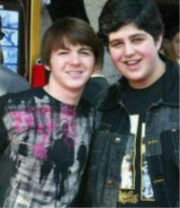

Drake & Josh
 De: La Frikipedia, la enciclopedia extremadamente seria.
De: La Frikipedia, la enciclopedia extremadamente seria.
De la serie Programas de TV:
¿Qué tipo de pasteles hace su madre para estar así de felices?
| Idioma original:
|
Gringo
|
| Creador:
|
Tu
|
| Duración:
|
Unos 80.000 minutos y un especial de más de 9.000.000
|
| No. Episodios:
|
Demasiados
|
| No. Temporadas:
|
Segun el nerd de iCarly son Pi al cubo
|
| ¿Aún se transmite?:
|
En Nickelodeon, sí
|
| Género:
|
Porno barato infantil
|
| Nivel de frikismo:
|
Extremo, hasta hay un episodio de Star Wars
|
| Películas:
|
"Drake & Josh van a Racoon City", "Drake & Josh en la Madre Patria", "Drake & Josh y el vecino pedófilo", "Drake & Josh: LSD Trip", "Drake & Josh entran a una secta pornográfica" y "Drake & Josh mueren".
|
{{{notas}}}
«Josh, hoy haremos lo que hacemos todas las noches... ¡tratar de dominar el mundo!»
~ Drake plagiando frases famosas
«Ay Drake mas fuerte o si o si haaaaaaaaaaaaa»
~ Josh Con Drake metiendoselo sobando a Josh
Drake & Josh es una serie famosa de Nick, también conocido como el canal del hermano menor de los hermanos Jonas.
Drake tiene una hermana menor llamada Megan, que tiene 11 años (al aparecer) y 14 años (en las nuevas temporadas), y su papel es hacerle la vida imposible a Drake y a Josh.
Josh por otra parte no tiene hermanos/as (que de cualquier manera, morirían de hambruna por culpa de Josh), su vida es todo lo contrario: es gordo, solo come, tiene mas enfermedades que el gordo marica de jimmy neutron (que es su ex-novio), se ahoga con cualquier cosa fácilmente,le tiene miedo a las tías etc, etc...
Drake y Megan se apellidan Parker Ballet Parking, y Josh se apellida Nichols Nipples (se pronúncia nippols)...
Drake es interpretado por Drake Bell, que es un supuesto guitarrista que toca mas feo que un gallo anorexico levantándose en las mañanas.
Y Josh Pezones es interpretado por Josh Peck.
Cabe destacar que Drake & Josh es una copia de mierda barata de Kenan y Kel al igual que Naruto es de Dragon Ball
La serie y sus personajes
 Drake esta triste? o que?.
La serie es como una supuesta comedia, al principio era mala, horrenda y de mala calidad, pero se quedando en la bancarrota por que ninguna persona la veía, cosa que a los perros les gusta... o a ti.
Esta serie finalizó cuando Hitler conquisto Gringolandia. En la tercera temporada, Josh queda anorexico hasta llegar ha su muerte, mientras que a Drake le explota la cabeza y su cerebro es verdosoy sigue violando a Josh cada corte comercial.
- Drake Parker: Es el hermanastro
sidoso Maniquí sexual de Josh... no es más que un white trash. En cada episodio se mete en problemas con Josh y siempre intentan solucionarlo con una solución errónea.
- Josh Nichols: Es todo lo contrario a Drake, o sea, niño nerd de el colegio (el tipico Tetote), el atontado de la serie, el gordo de la serie, y el espanta-chicas de la serie, no hace otra cosa que solo comer, comer y ¡¡más comer!!, hace trucos de magia que le enseña ¿la hermana del que lee este articulo?... Es el hermanastro del jodido de Drake, es el que siempre quiere un abrazo y es muy adepto a
practicar sexoplaticar con personas de edad avanzada, tiene una extraña fijacion por las semillas, y suele vivir pajeandose pensando en Oprah, su mayor logro es producir 10 litros de sudor en 5 min, haciendo una especie de ritual voodoo en el que se convulsiona de distintas maneras hasta culminar en el orgasmo.
- Megan Parker: Siempre queria hacerlo con Mindy (Era lesbiana) en un capitulo usa su cepillo para masturbarse y luego usa lo que queda para lavarse los dientes.
- Walter Nichols: El padre de Josh, es el hombre del clima, y siempre sale con ese pretexto de: "Oigan, yo soy el del clima" para que le pidan un autógrafo o cosas similares, cosa que no resulta, ya que mas gordo que Josh, y cada vez que le preguntan o dice eso, la gente siempre se burla de él, asi que tengan cuidado, porque es peor que la ballena Willy.
- Tu: El tipico niño rata que es fan de la serie que quedó traumado al ver este artículo y le dió chorrillo
- Mamá de Drake y Megan: Audrey- bitchy de nipples parker: Es la madre de Megan y Drake y hijastro de Josh, es una persona normal, delgada, bla bla bla, etc etc... se caso con Walter Nipples porque le podia decir la temperatura de la regadera... aparte que al estar el agua fría mete a Walter a que se le endurezcan los nipples. ¡Ah! y es la mamá más coqueta de todas, guarra, y para seguir su ciclo
menstrual, le enseño clases de coqueteo a Josh, así que ya atrae negros gays chicas, pero sigue siendo un miedoso gallina al igual que IP anónima....
Drake y Josh van a la escuela (la misma mierda de siempre), y siempre Drake es el típico niño que llega tarde y Josh es el nerd que llega temprano. La Señora Heifer, es la maestra que les imparte clases a Drake y Josh y la única jodida que le puso un 9 a Mindy, y odia a Drake, cosa que NO es nueva.
Ambos siempren caen en trampas de su hermanita Megan, son unos tontos y eso que tienen cerebro pero esta en Off porque nunca se han molestado en encenderlo...
Hay muchas cosas tontas que Drake y Josh siempre han hecho, cosas de las que se arrepienten, y al final de todo, van a pedirle ayuda a Megan para que los saquen de sus guarradas, y Megan de tan tonta, idiota, etc, que es, siempre los termina ayudando, y de por sí, que es una falsa delante de sus padres.
Personaje de rellenos en la serie
- Mindy: Es la novia de Josh, es su primera novia de por sí, y su relación solo duró como 2 años, cortaron por discusiones tontas y se besaron 2 veces porque a Mindy le dió asco besar a Josh. Es la niña loca de las matemáticas y ciencias, y ha ganado la feria de la ciencias 4 años seguidos, dejando a Josh
con el culo cagado en segundo lugar siempre. Es una loca, y la metieron a una clínica psiquiátrica de rehabilitación por estúpida y sus depredadores favoritos son los tiburones porque sus grandes mandíbulas son perfectas para satisfacer sus guarradas.
"Craig y Eric": La competencia de los hermanos idiotas en cuanto a lo estúpido gay... uno no puede vivir sin el otro... en un episodio Craig esta tan follado idiota con Eric que le puede dar cuerda a un televisor del año del caldo, porque Eric ya se cansó.
"Dr. Glacer": Parecido al travesti de Anger Managment, este tío es el único que puede distinguir una cabra embarazada, aparte que es bien carero (y ni siquiera hace el privado) es el equivalente a un teibol 5 estrellas pero con doctorado.
"Loco (asexuado) steve"': Es otro de las ideas del conserje de Nickelodeon... este tipo es esquizofrénico posiblemente por una enculaposesión por un iCaca
"Gavin": El ultimo de los Ramones que aun tiene fama... su peinado sirve para limpiar los derrames de baba de Drake y Josh, para limpiar vomitada... quiere con la mamá guarra de Drake. Cuando Walter se esta pajeando en el baño, Gavin se aprovecha y le echa los pedos perros.
- Alice Heifer: Es la maestra que les reparte español a Drake y a Josh, y aplaza a Drake porque le cae mal, le gustan los perros... tanto que hasta en un episodio se muestra a el rottGÜEYler de la maestra, un perro que ya se los andaba
montando comiendo en el baño a los 2 pendejastros. ademas que en el mismo episodio hallaron vídeos de ella audicionando para una película porno.
- Helen: Es la supuesta dueña de los Cines Premier, le dió empleo a Drake y a Josh, pero despidió a Drake para que en las noches le trabajara en sus guarradas y así ganará más, y es por eso que es su preferido, y a Josh lo odia, es una gorda, fea, etc, etc. Si quieren más info. dénle click a su enlace.....
- Oprah: bueno ella realmente no es un personaje de relleno, pero es el amor plátonico de Josh, cosa que nuuuuuuuuuuunca va a suceder. Hasta que la conozca, seguirá
pajeandose imaginándosela en su cartel de Oprah...
Sus cápitulos y algo más
- Sus cápitulos son del todo iguales, pero la mayoría transcurren dentro de la casa, en los cines premier, dentro de un carro, en la escuela o en su habitación.
- Es extraño que transcurran en un patio, un sótano, en otra casa que no sea en la de ellos, en un casillero, etc.
- Hay variedades de diversos capítulos, en donde hay algunos que son de rellenos y hay otros donde si muestran lo curioso e interesante.
- En la mayoría de los capítulos Megan se
viene venga por alguna cosa estúpida que les ha hecho Drake o Josh, esto es igual a = Capítulos de relleno.
Esquematización de un Cápitulo de Drake & Josh
- Hablan acerca de sus estupideces y terminan diciendo cosas ilógicas y estúpidas
- Dan acerca de lo que se trata el cápitulo
- Viene el supuesto Opening de mierda que se hizo el Drake
- Dan un cápitulo en donde siempre se tienen que meter en guarradas y mierdas así.
- Comerciales
- Regresan con la supuesta trauma
- Comerciales
- Dan ya la última parte del episodio
- Y al final terminan con las escenas estúpidas que les hicieron de sobra o la supuesta continuación de lo que quedaron
- Los créditos
- El siguiente programa...
Autor(es):
- Frikiman
- Khazike Khashondo
- El Sevillano
- Pipop
- Luchs101
- Guga
- Renji
- Veni Vidi Vici
- MasterWolf59
- Kike92miley92
Frikipedia 2005-2016, Licencia
GFDL 1.2 - Extraído por FrikiLeaks